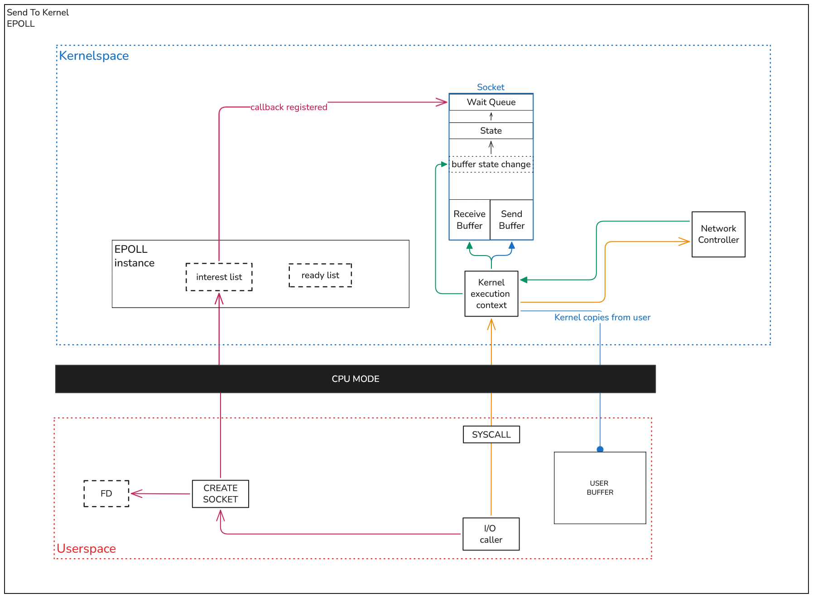
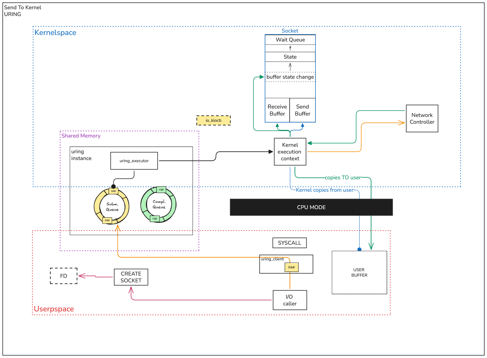
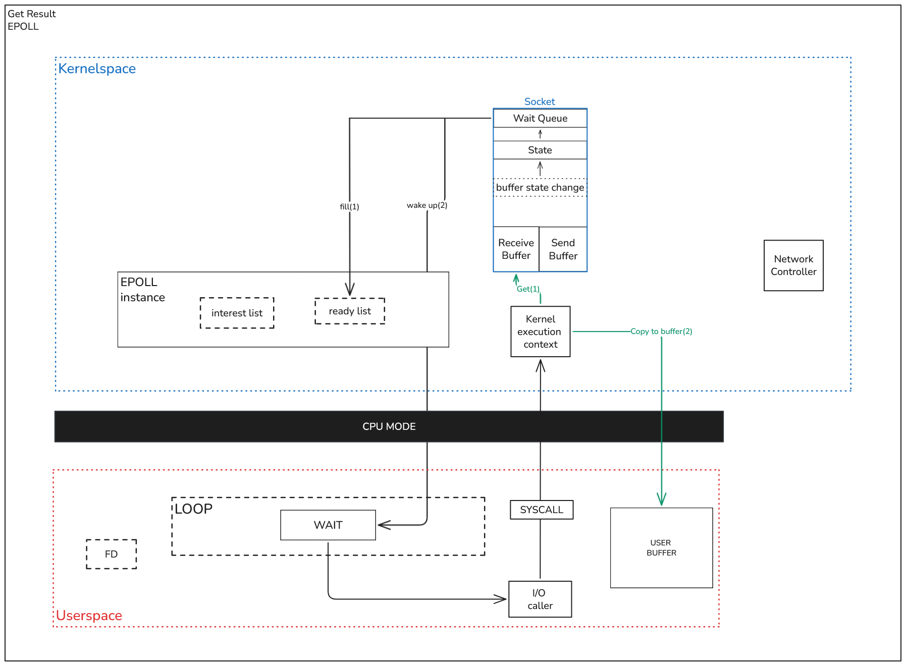
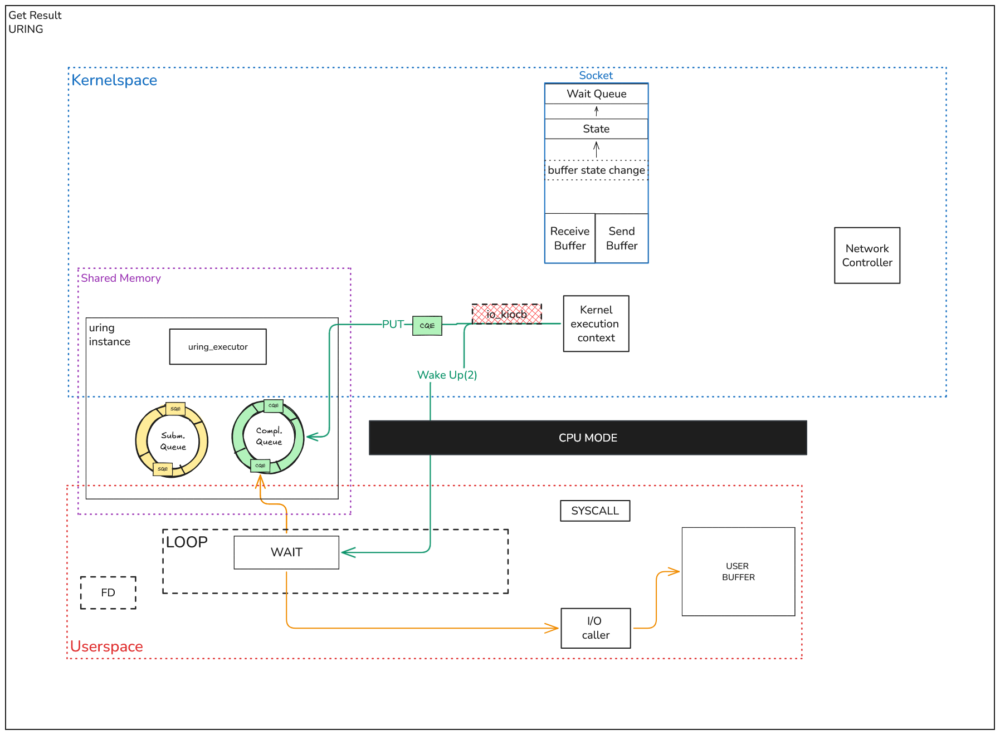

io_uring¶
io_uring is an efficient Linux implementation of the Proactor I/O model
Main way to interact with io_uring is liburing, and uringio use it too.
If you are already familiar with io_uring, you can go to: Architecture page
Specific concepts¶
- io_uring - Linux API for async I/O, implements proactor pattern
- ring - Instance of io_uring, contains two buffer rings - Submission Queue and Completion Queue
- Submission Queue [SQ] - Queue buffer that acts as input topic - app writes async operation there, kernel read out of there
- Completion Queue [CQ] - Queue buffer that acts as output topic - kernel writes result of done operation there, app read out of there
More about these topics: - man page, lords of io_uring
- Submission Queue Entry [SQE] - Object, that wraps input data for Submission Queue. SQE is a record for SQ
Links to learn more: lords of io_uring.SQE
- Completion Queue Event [CQE] - Object, that wraps input data for Completion Queue. CQE is a record for CQ
Links to learn more: lords of io_uring.CQE
- Fixed Buffer - Optimization workaround for user buffers, to not send buffer with every operation. User register buffers, and then should only track their indexes and send this indexes. Reduces need of copy-pasting buffer data around user and kernel space.
Links to learn more: lords of io_uring.Fixed Buffers
- Provided Buffer - Another optimization. Here is user register buffers, and io_uring even handler their indexes.
Links to learn more: man page
- Buffer Ring - One more optimization, created specifically to optimize Provided Buffers mechanism.
Links to learn more: man page
- Multishot - Allows one SQE to generate multiple CQE on some trigger-event.
Links to learn more: man page
- Zero-copy - Reduces CPU load on copying data between kernel and user-space.
Links to learn more: man page
Short visualized explanation:¶
io_uring provides two shared buffers:¶
- Submission Queue - Where apps pushes I/O requests.
- Completion Queue - Where kernel pushes I/O responses.
The core difference between this and standard reactor model using epoll is that proactor models provides solutions to reduce system calls for getting result. \ Also, rings are placed inside shared memory, while epoll is inside kernel memory.
Let's look at this difference by looking at diagrams of two phases: 1. Sending to kernel 2. Getting result
Sending to Kernel¶
Epoll¶

- First, you`re creating socket and getting fd.
- By passing fd, socket is registered in epoll's interest list + in socket's
Wait Queueis passing callback. - Then user is making I/O operation. At this point, all user's information is in
User Buffer. - Syscall is coming to kernel through CPU.
- Kernel copies from
User Bufferto socket'sSend Buffer. - Kernel is executing command, for example - send to
Network Controller(abstraction). - When controller returns to kernel, it saves result to socket's
Receive Buffer.
Uring¶

- First, you`re creating socket and getting fd.
- Then user is making I/O operation. At this point, all user's information is in
User Buffer. - Before making syscall, uring client is creating
SQE. - Then syscall is making to said Kernel: 'Data is inside
Submission Queue'. - Rings are structures in shared memory, but uring also have helpers. Here let's call all of them just
uring_executor. uring_executoris creatingio_kiocbobject. This is complex object, that provides functionality to kernel create retry callback and return callback. Lives only in kernel.- Kernel copies from
User Bufferto socket'sSend Buffer. - Kernel is executing command, for example - send to
Network Controller(abstraction). - When controller returns to kernel, it saves result to socket's
Receive Buffer. - Most important part: kernel is making transaction to/from
User Bufferfrom/toSocket Buffer. Asynchronously!
Getting Result¶
Epoll¶

- At this point, state of socket is changing and callback inside
Wait Queueare calling. - This callback makes two things:
- Fills ready list with result
- Calls
wake up. - Component that waits for result, for us it is
loop, is says to app -you can get result - App is making syscall to kernel.
- Kernel gets content of
Receive Buffer. - Kernel copies result to
User Buffer.
Uring¶

- After writing to
User Buffer. - Kernel creates CQE and sends it straight to
Completion Queue. - Kernel destroys
io_kiocb. - Kernel calls
wake upto app - loop. - Loop is getting CQE.
- Loop says to app -
you can get result. - Data is already in user buffer - use it
Those diagrams are showing the simplest configurations of both epoll and uring.
Both system can be more optimized by implement alternative for wake up, buffer optimizations, setting retires and more from the box.
Conclusions¶
To simplify, we can write schemes like this:
epoll:
task -> epoll wait for fd -> fd ready -> read() syscall -> done
io_uring:
task -> submit SQE -> kernel did read() syscall -> CQE -> done
| Feature | Epoll (Reactor) | io_uring (Proactor) |
|---|---|---|
| Notification | "It's ready, you do it." | "It's done, here is the result." |
| Syscalls | 2+ (Wait + Read/Write) | 1 (Submission) |
| Data Copy | Synchronous (blocks CPU) | Asynchronous (Kernel handles it) |
| Thread Usage | Often needs a thread pool for files | Truly single-threaded async |
| Location | Context resides in Kernel Space | Queues are in Shared Memory |
| Data Copy | App copies data | Kermnel copies data |